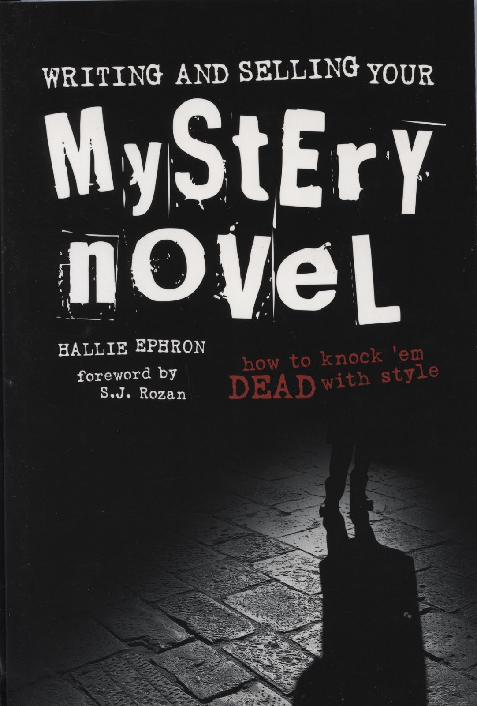
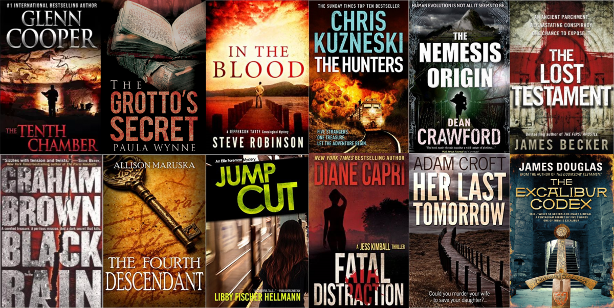

There’s something satisfying about the best murder mystery books. The crime of murder is inherently terrifying,
which makes these stories part horror fiction and part puzzle.You can feel the danger of murder looming in the background
while also having the satisfaction of solving the crime in the foreground of the story. The reader knows that in the end,
whether or not he or she is caught, the murderer will at least be identified. mysteries, even the bad ones, are fun. It’s really easy to find a whole lot of badly written murder mystery novels
that are still great reads because you’re just dying to find out whodunnit. But finding those that actually stick with
you long after reading them, the way any good novel does, can be a bit more complicated. Here are a few of my favorite
murder mystery books that I recommend to friends and, in some cases, have read more than once
(yes, even though I already know who did it).

Two

Thriller is a broad genre of literature, film and television, having numerous, often overlapping subgenres.
Thrillers are characterized and defined by the moods they elicit, giving viewers heightened feelings of suspense,
excitement, surprise, anticipation and anxiety.[1] Successful examples of thrillers are the films of Alfred Hitchcock. generally keep the audience on the "edge of their seats" as the plot builds towards a climax.
The cover-up of important information is a common element.[3] Literary devices such as red herrings, plot twists,
and cliffhangers are used extensively. A thriller is usually a villain-driven plot, whereby he or she presents
obstacles that the protagonist must overcome.
Three
Poetry (the term derives from a variant of the Greek term, poiesis, "making") is a form of literature that uses
aesthetic and rhythmic[1][2][3] qualities of language—such as phonaesthetics, sound symbolism, and metre—to evoke
meanings in addition to, or in place of, the prosaic ostensible meaning.
Poetry has a long history, dating back to prehistorical times with the creation of hunting poetry in Africa,
and panegyric and elegiac court poetry were developed extensively throughout the history of the empires of the Nile,
Niger and Volta river valleys [4]. Some of the earliest written poetry in Africa can be found among the Pyramid Texts
written during the 25th century BCE, while the Epic of Sundiata is one of the most well-known examples of griot court poetry.
The earliest Western Asian epic poetry, the Epic of Gilgamesh, was written in Sumerian.